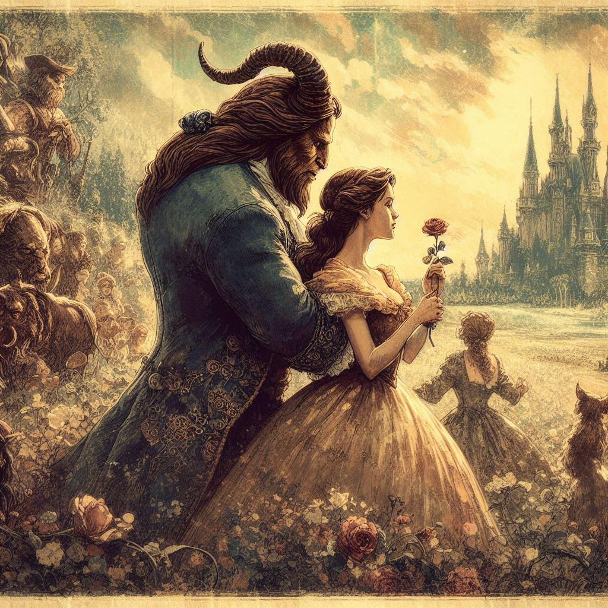
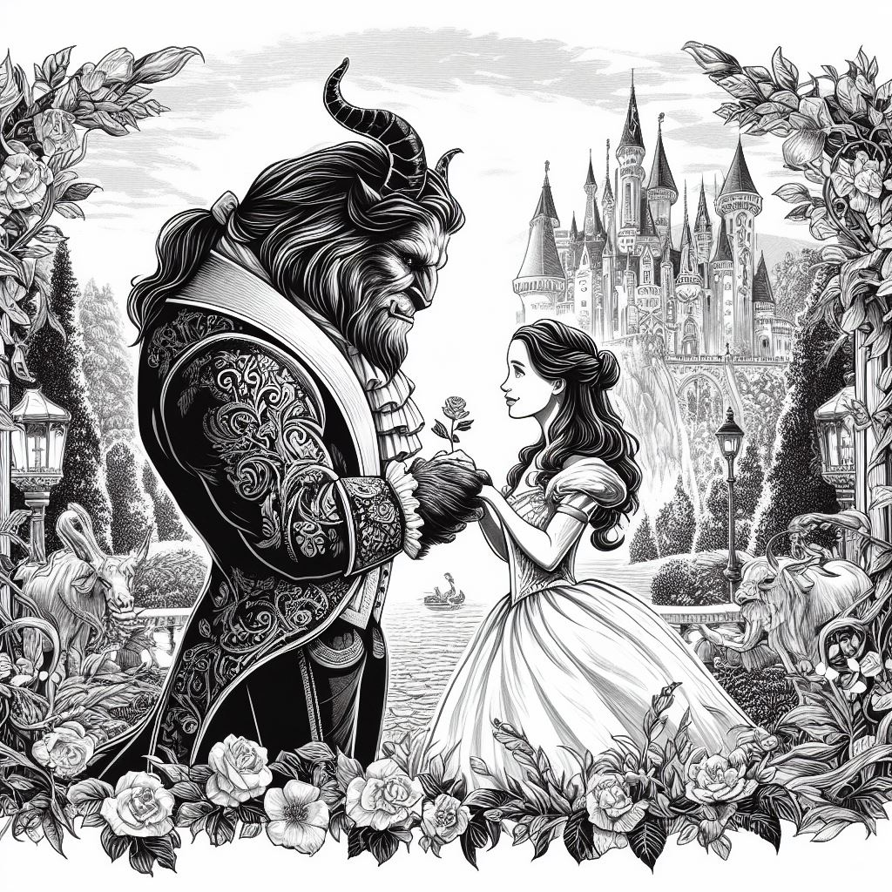
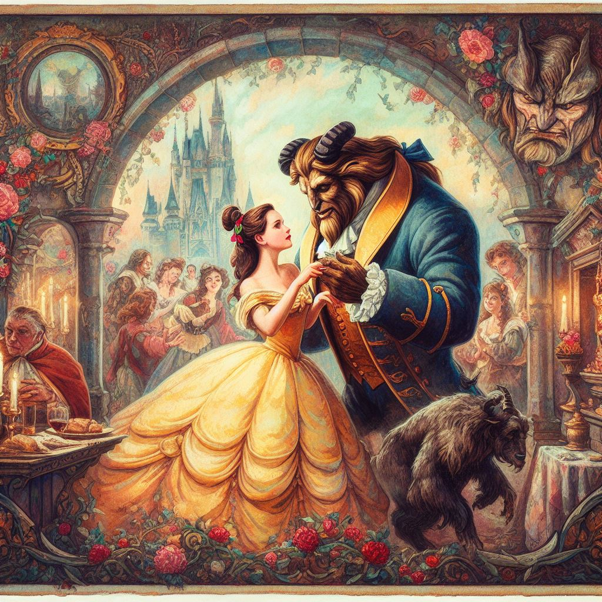
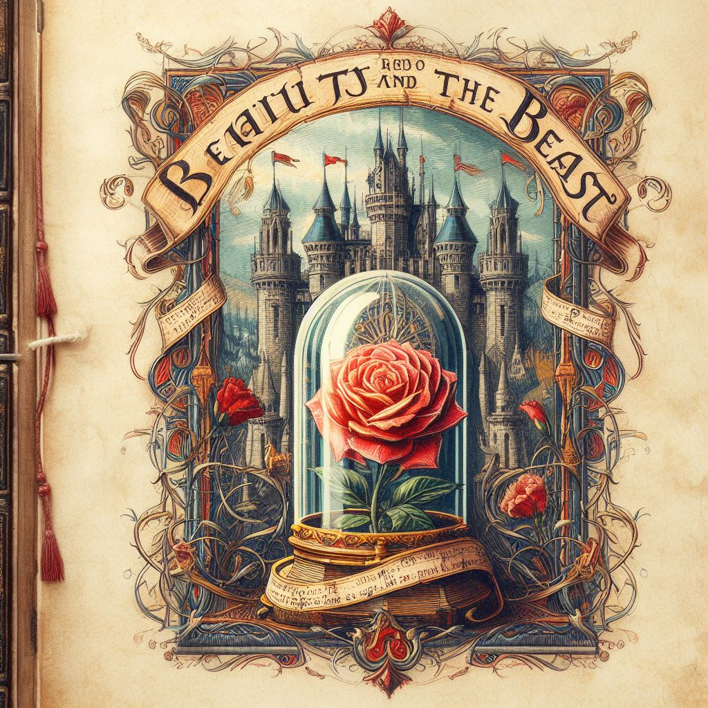

Fakir Bir Ticaret Adamı Bir zamanlar, fakir bir ticaret adamı vardı. Üç güzel kızı olan bu adam, bir gün büyük bir servet kaybetti ve kırsal bir evde yaşamaya başladı. En küçük kızı Belle, hem güzelliği hem de neşeli ruhuyla bilinirdi.
Gizemli Şato Bir gün, adam bir şatoya sığındı ve orada yaşayan Çirkin tarafından hoş karşılandı. Ancak, Çirkin bir gül çaldığında öfkelendi ve adamın hayatını ancak en genç kızı Belle’i ona verirse bağışlayacağını söyledi.
Belle ve Çirkin Belle, babasını kurtarmak için Çirkin’in yanında yaşamayı kabul etti. Zamanla, Çirkin’in kaba dış görünüşünün altında nazik bir kalp olduğunu keşfetti.
Gerçek Aşk Belle, Çirkin’e aşık oldu ve bu aşk, Çirkin’i yakışıklı bir prense dönüştürdü. Belle ve prens, mutlu bir şekilde yaşadılar ve gerçek aşkın güzelliğin içinde olduğunu herkese gösterdiler.
